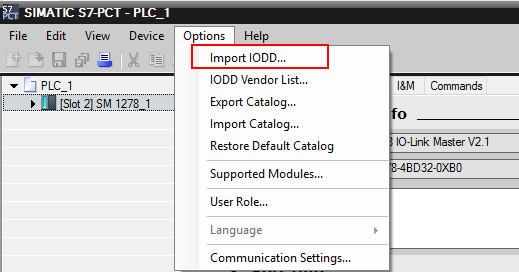
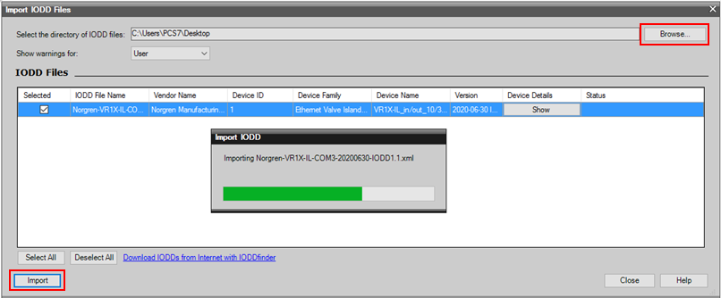

定义： IO-Link 是一种创新型点到点通信接口，适用于符合 IEC 61131-9 标准的传感器/执行器应用领域。
IO-Link 包含以下系统组件：
如：
使用 3 线制或 5 线制非屏蔽标准电缆
对 IO-Link 进行组态和分配参数的工程组态工具
西门子推出了各种 IO-Link 产品并提供相应的技术支持：
 按住 Shift 键时用鼠标点击下列链接，打开新浏览器窗口。
按住 Shift 键时用鼠标点击下列链接，打开新浏览器窗口。
https://support.industry.siemens.com/cs/cn/zh/view/32469496
在 IO-Link 系统的技术定义中，IO-Link 协会首先创建了规范版本 1.0， IO-Link 系统的进一步开发和附加功能产生了版本 1.1。 版本 1.1 在 1.0 的基础上主要增加功能：
在 IO-Link 规范 V1.1 中，IO-Link 操作模式中定义了三种数据传输速率（波特率）：
组合 IO-Link 设备时，请注意：
IO-Link 系统组态方式有两种：
① 不使用 S7-PCT 进行组态
② 使用 S7-PCT 进行组态
功能区别如下表所示：
| 要求 | 使用 S7-PCT 进 行组态 | 不使用 S7-PCT 进行组态 | |
|---|---|---|---|
| IO-Link 自动启动 | IO-Link 手动启动 | ||
| 使用 IO-Link 设备描述 IODD | √ | - | - |
| 设置输入和输出数据的长度（每 个端口） | 自动 | 手动 | 手动 |
| 分配供应商 ID 和设备 ID | 自动 | - | 手动 |
| IO-Link 设备更换时的特性 | 可编程 | - | 可编程 |
| IO-Link 循环时间可调整 | √ | - | - |
| IO-Link 设备参数可调整 | √ | - | - |
| 显示 IO-Link 过程数据结构 | √ | - | - |
| 监视 IO-Link 过程数据 | √ | - | - |
| 显示 IO-Link 设备的诊断消息 | √ | - | - |
从上表可见：
1、使用 S7-PCT 进行组态的特点
① 使用 S7 端口组态工具 (S7-PCT) 组态 IO-Link 主站，不仅可显示完整的系统架构，而且还可对 IO-Link 系统进行详细组态和参数设置。
② 通过 S7-PCT，可通过设备制造商提供的 IODD 轻松组态 IO-Link 设备。
③ 在 S7-PCT 在线视图中，可显示 IO-Link 设备的详细诊断状态和过程值。
2、不使用 S7-PCT 进行组态的特点
① 如果选择“IO-Link 自动组态”，则采用 IO-Link 设备的默认工作模式（自动获取供应商 ID 和设备 ID，且无法进行详细组态和设置参数）。
② 如果选择“IO-Link 手动组态”，则采用 IO-Link 设备的默认工作模式（需手动设置供应商 ID 和设备 ID，且无法进行详细组态和设置参数）。
对于 IO-Link master 主站模块而言，各个版本均可以选择“使用 S7-PCT 进行组态”功能。 是否可选择“不使用 S7-PCT 进行组态”，取决于 TIA Portal 的版本和 IO-Link 主站模块的固件版本，具体信息请查阅：
 按住 Shift 键时用鼠标点击下列链接，打开新浏览器窗口。
按住 Shift 键时用鼠标点击下列链接，打开新浏览器窗口。
https://support.industry.siemens.com/cs/cn/zh/view/65949252 ，章节：3.1.3 组态方式概述。
后续内容以 S7-1200 的 IO-Link master 模块 SM1278 的使用为例进行说明，要实现上述“不使用 S7-PCT 进行组态”功能，要求：
① TIA Portal step7 V15.1 及以上版本
② SM1278 固件 V2.1 及以上版本
1. 如何向 S7-PCT 中添加第三方 IO-Link 设备？
打开 S7-PCT 工具软件，菜单：“Options>Import IODD”。

图.01
点击“Browse”选择 IODD 文件，点击“Import”按钮进行安装。

图.02
安装完成后，在右侧目录中可见第三方 IO-Link 设备。

图.03
2.对于某些 IO-Link 设备需要通过非周期访问读取/修改设备参数，如何实现？
以下链接中提供的库，包含可用于处理 SIMATIC S7 的 IO-Link 通信模块设备参数以及所连接 IO-Link 设备数据记录的函数块。
 按住 Shift 键时用鼠标点击下列链接，打开新浏览器窗口。
按住 Shift 键时用鼠标点击下列链接，打开新浏览器窗口。
https://support.industry.siemens.com/cs/cn/en/view/82981502
3.如何使用端口组态工具"S7-PCT"建立与IO-Link Master的连接？
 按住 Shift 键时用鼠标点击下列链接，打开新浏览器窗口。
按住 Shift 键时用鼠标点击下列链接，打开新浏览器窗口。
https://support.industry.siemens.com/cs/cn/zh/view/109479071